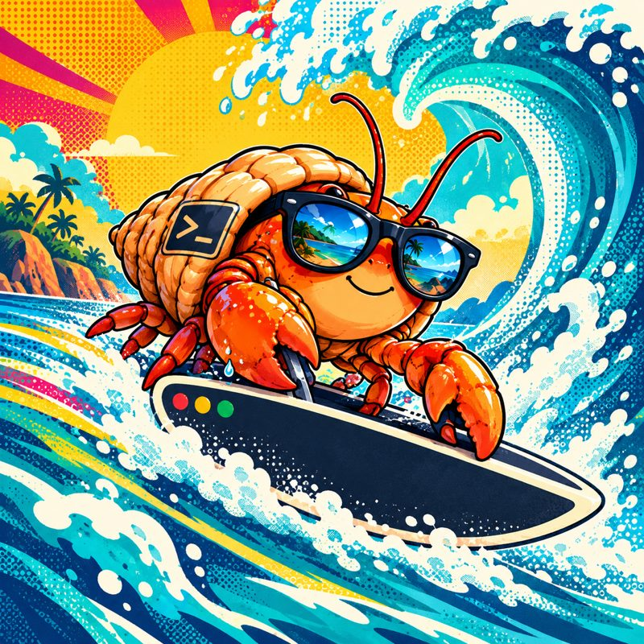
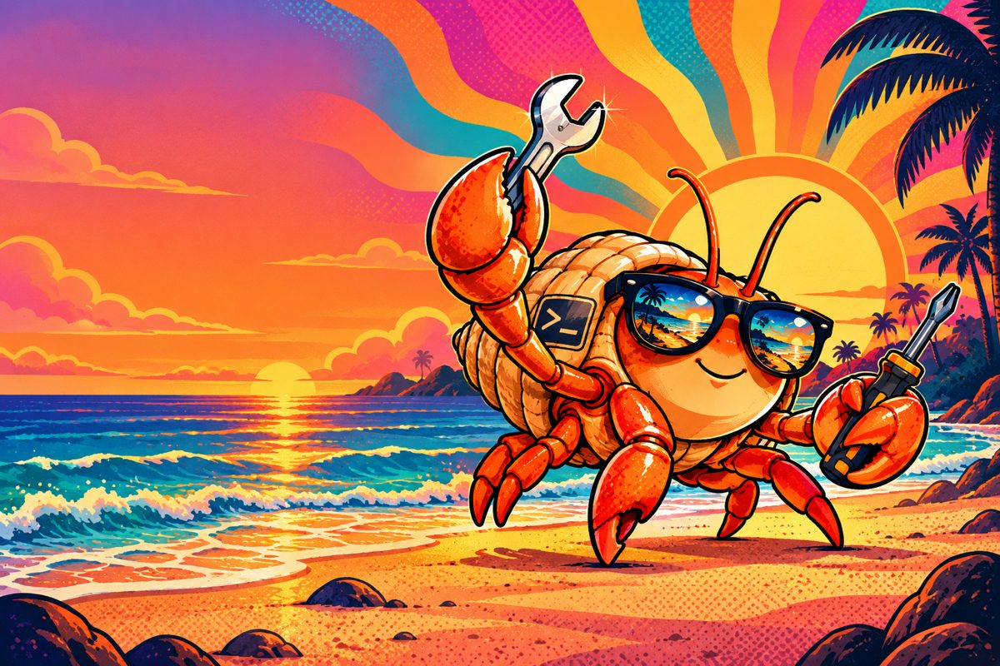
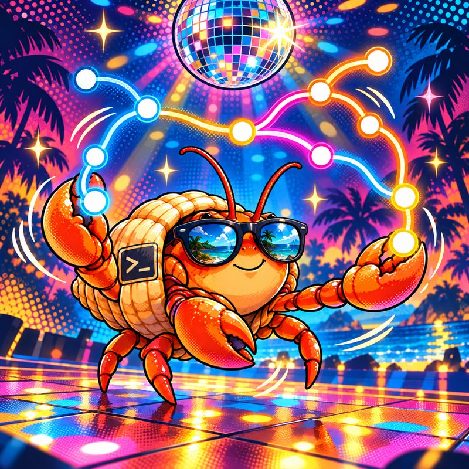
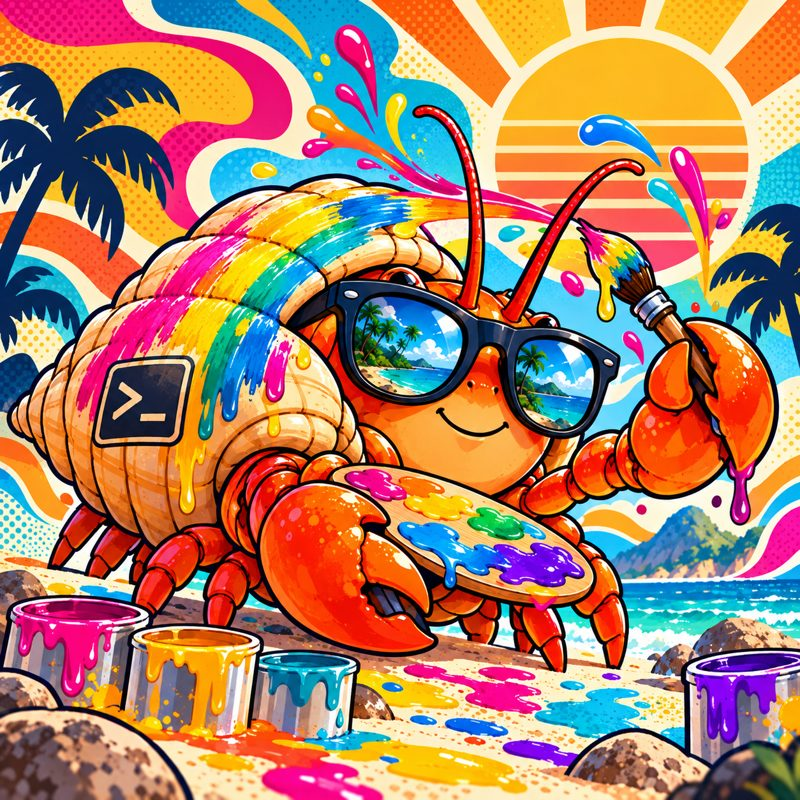
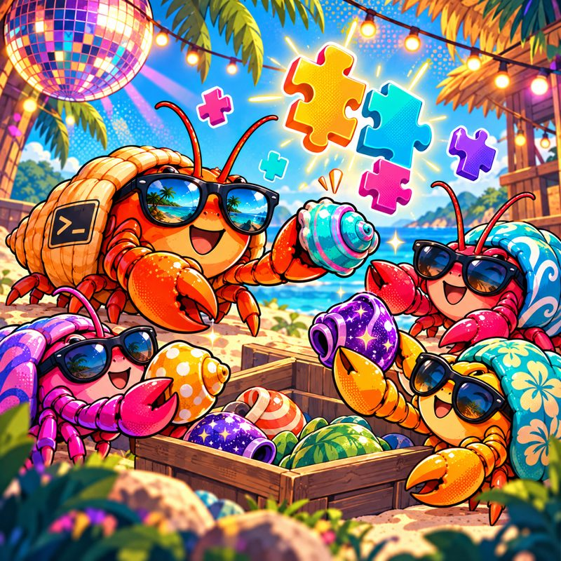

Async prompt
git fetch, the merge / pull request and its CI, unhealthy containers: all fetched in the background. The prompt redraws itself when they arrive.
A plain zsh / bash setup for Linux and macOS, with an async, themeable prompt that never makes you wait for the network.

Directory, branch, ahead / behind, dirty files with their diff stat, the merge request and its CI, your Claude agents and quota. Local facts show up right away, networked ones redraw in place when they land — no Enter needed.

Everything a busy shell needs, nothing it doesn't. Each block stays quiet until it has something to say.

git fetch, the merge / pull request and its CI, unhealthy containers: all fetched in the background. The prompt redraws itself when they arrive.

Branch, worktree, ahead / behind, a diff stat, a rebase or bisect in progress with its conflicts, the branch's ticket and the review of its MR / PR.

The layout is a format string like '{dir} · {git}'. Colors are roles, icons are variables, a block is a small zsh function. Per-project looks too.

Blocks and themes shared as git repositories, checked against a JSON schema. Nothing is fetched or run until you say yes.
shkit doctor. Changes apply at once.sudo, shared unlimited history, colored man.~/.config/shkit/, never in the repo.~/.zshrc and ~/.zshenv, creates ~/.config/shkit.
$ git clone https://github.com/fmatsos/shellkit.git ~/shellkit $ ~/shellkit/zsh/install.sh $ exec zsh
$ shkit set format '{dir} · {git} · {mr}' # the info line $ shkit set color_accent '38;5;33' # a color role $ shkit project # settings for this repo only… $ shkit set -p format '{dir} · {git}' # …used here and below $ shkit show # what is set, where
$ shkit doctor| Linux | macOS | |
|---|---|---|
| shell | zsh 5.8+ (bash 5.1+ for the fallback) | the system zsh; brew install bash for the fallback |
| git | ✓ | ✓ (Command Line Tools or Homebrew) |
| jq | apt install jq | built in since macOS 15, brew install jq before |
| optional | glab / gh (MR / PR and CI), docker | same, via Homebrew |
shkit referenceevery command and option
The promptblocks, format, colors, icons
Writing a themea look of your own
Writing a blocka new {segment}
Pluginsinstall, write, publish